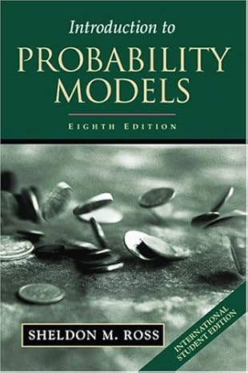
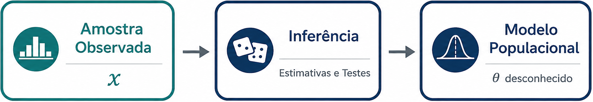
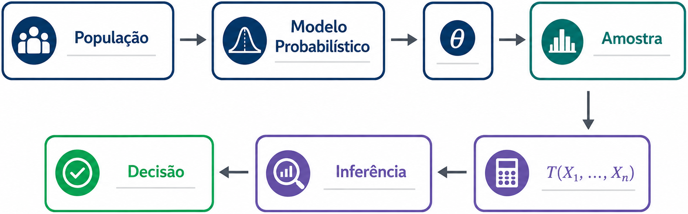

O problema da inferência estatística
Como produzir conhecimento sobre uma população a partir de uma amostra?
ESTAT0078 – Inferência I
Prof. Dr. Sadraque E. F. Lucena
http://sadraquelucena.github.io/inferencia1
Canais de Comunicação e Materiais da Disciplina
Grupo no WhatsApp: http://tiny.cc/inf1262
Informações da disciplina
- Componente curricular: ESTAT0078 – Inferência I
- Período: 4º semestre
- Carga horária: 60 horas (4 créditos)
- Horário:
- Terças - 19h00 às 20h30
- Quintas - 20h45 às 22h15
- Docente: Prof. Dr. Sadraque E. F. Lucena
Mapa da Disciplina: Para Onde Vamos?

- Como os dados chegam até nós?
- Como obter um estimador?
- Como saber se um estimador é bom?
- Qual é o melhor estimador possível?
- Como quantificar a incerteza da estimação?
Objetivo da Disciplina
- Construir estimadores para parâmetros populacionais;
- Avaliar a qualidade de procedimentos de estimação;
- Interpretar estimativas e seus níveis de incerteza;
- Compreender os fundamentos probabilísticos da estimação;
- Reconhecer as propriedades teóricas dos estimadores;
- Aplicar métodos de estimação em problemas científicos.
Ementa
Amostras e distribuições amostrais.
Estimação pontual e por intervalo.
Estudo de estimadores mais comumente usados: método dos momentos, máxima verossimilhança, estimador de Bayes.
Intervalos de confiança; métodos para construção de intervalos de confiança.
Conteúdo Programático
Parte 1. Fundamentos da Inferência Estatística
Como os dados chegam até nós?
- Inferência estatística e tomada de decisão
- População, amostra, parâmetro e estatística
- Variabilidade amostral
- Distribuições amostrais
- Introdução ao problema da estimação
Conteúdo Programático
Parte 2. Construção de Estimadores
Como obter um estimador?
- Conceitos de estimador e estimativa
- Método dos Momentos
- Método da Máxima Verossimilhança
- Introdução à Inferência Bayesiana
Conteúdo Programático
Parte 3. Avaliação de Estimadores
Como saber se um estimador é bom?
- Viés
- Variância
- Erro Quadrático Médio
- Consistência
- Eficiência
- Informação de Fisher
- Limite de Cramér–Rao
Conteúdo Programático
Parte 4. Estrutura Teórica da Estimação
Qual é o melhor estimador possível?
- Estatísticas suficientes
- Critério da fatoração de Neyman–Fisher
- Família exponencial
- Completude
- Estimadores de Variância Uniformemente Mínima
Conteúdo Programático
Parte 5. Estimação por Intervalos
Como quantificar a incerteza da estimação?
- Quantidades pivotais
- Intervalos de confiança exatos
- Intervalos de confiança assintóticos
- Introdução aos métodos computacionais de construção de intervalos (Bootstrap)
Avaliação
- Serão realizadas 3 avaliações.
- A aprovação requer uma média maior ou igual a 5,0.
- Uma avaliação substitutiva será realizada ao final do período. Esta prova abrange todo o conteúdo, substitui apenas uma nota e é permitida em dois casos:
- Para repor falta em alguma das avaliações.
- Para substituir a menor nota (apenas para quem tiver média inferior a 5,0).
Datas Importantes
Avaliações (previsão):
- 24/Set/26 (quinta): Avaliação 1
- 03/Nov/26 (quinta): Avaliação 2
- 08/Dez/26 (terça): Avaliação 3
- 15/Dez/26 (quinta): Avaliação Substitutiva
Não haverá aula:
- 08/Set/2026: Dia de N. Sra. da Vitória, padroeira de São Cristóvão (feriado municipal)
- 24 e 26/Nov/25: XII SEMAC
Bibliografia Recomendada
Básica


Bibliografia Recomendada
Complementar



Da Probabilidade à Inferência Estatística
O Paradigma da Probabilidade
- Nos estudos de Probabilidade, a distribuição probabilística da população é completamente conhecida.
- A função de probabilidade ou de densidade \(f(x \mid \theta)\) é especificada.
- O parâmetro \(\theta\) da distribuição é conhecido.
- A única fonte de aleatoriedade é a amostra futura.

- Objetivo: determinar probabilidades associadas ao comportamento de uma amostra aleatória.
O Paradigma da Probabilidade
Exemplo: Ocorrência de Sinistros
Assume-se que o número anual de sinistros de uma apólice segue uma distribuição de Poisson com média λ = 0,25 sinistros por ano, \(X\sim \text{Poisson}(\lambda=0{,}25)\).
A partir desse modelo, é possível calcular:
- a probabilidade de uma apólice não registrar sinistros: \(P(X=0)\);
- a probabilidade de ocorrer pelo menos um sinistro: \(P(X\geq 1)\);
- a probabilidade de uma carteira com milhares de apólices registrar mais de determinado número de sinistros.
Em todos esses casos, a distribuição de probabilidade é conhecida e o objetivo é prever o comportamento de perdas futuras.
O Paradigma da Probabilidade
Exemplo: Predição de Internações
- Uma equipe resolve prever o tempo de permanência hospitalar de pacientes internados por complicações do diabetes usando a distribuição Lognormal, \(T \sim \text{Lognormal}(\mu,\sigma^2)\).
- Esse modelo permite determinar:
- a probabilidade de uma internação durar mais de 15 dias;
- o tempo médio esperado de ocupação dos leitos;
- a proporção de pacientes com internações prolongadas;
- a capacidade hospitalar necessária para atender à demanda prevista.
- Como a distribuição de probabilidade é completamente conhecida, é possível prever a utilização futura dos recursos hospitalares.
O Paradigma da Inferência Estatística
- Já nos problemas de Inferência Estatística, a distribuição probabilística da população não é completamente conhecida.
- A forma da distribuição pode ser conhecida ou assumida, mas o parâmetro \(\theta\) é desconhecido.
- Observa-se apenas uma amostra \((x_1,\ldots,x_n)\) proveniente da população.
- A fonte de informação passa a ser os dados observados.

- Objetivo: utilizar a amostra para aprender sobre a população e estimar o parâmetro desconhecido \(\theta\).
O Paradigma da Inferência Estatística
Exemplo: Estimativa da Ocorrência de Sinistros
- Uma seguradora deseja estimar a frequência anual de sinistros de uma nova carteira de seguros, assumindo a distribuição de Poisson, \(X\sim \text{Poisson}(\lambda)\), mas o parâmetro \(\lambda\) é desconhecido.
- Observa-se milhares de apólices e obtém-se uma amostra histórica de sinistros.
- A partir dessa amostra, é possível:
- estimar a frequência média de sinistros (estimativa de \(\lambda\));
- construir intervalos de confiança para a estimativa de \(\lambda\);
- testar hipóteses sobre mudanças na frequência;
- definir um prêmio compatível com o risco observado.
- Agora os dados vêm primeiro e o modelo é aprendido posteriormente.
O Paradigma da Inferência Estatística
Exemplo: Predição de Internações
- Um hospital deseja conhecer o tempo médio de permanência de pacientes internados por diabetes. Assume-se \(T\sim \text{Lognormal}(\mu,\sigma^2)\), mas os parâmetros \(\mu\) e \(\sigma^2\) são desconhecidos.
- Após coletar uma amostra de pacientes internados, torna-se possível
- estimar o tempo médio de permanência \(\mu\);
- estimar a variabilidade entre pacientes \(\sigma^2\);
- construir intervalos de confiança para essas estimativas;
- avaliar se houve mudança após uma intervenção clínica.
- Perceba que o modelo que busca replicar o comportamento da população é ajustado utilizando os dados observados.
Paradigmas
Probabilidade
Inferência Estatística

Elementos do Problema Inferencial
Os Elementos da Inferência Estatística
- Todo problema de Inferência Estatística é composto por cinco elementos fundamentais:
| Elemento | Papel |
|---|---|
| População | Origem dos dados |
| Modelo probabilístico | Representação matemática da população |
| Parâmetro | Característica desconhecida da população |
| Amostra | Informação disponível |
| Inferência | Processo de aprender sobre o parâmetro |
População e Modelo Probabilístico
- Uma população corresponde ao conjunto de unidades sobre as quais se deseja obter informações.
- Entretanto, em Estatística Matemática, a população é representada por um modelo probabilístico, que descreve matematicamente o comportamento da variável de interesse.
- Exemplos:
- Tempo até um sinistro;
- Valor de indenizações;
- Número de internações;
- Renda mensal.
População e Modelo Probabilístico
- Considere uma população descrita por uma característica \(X\).
- Assume-se que sua distribuição seja dada por \(f(x\mid\theta)\), em que \(\theta\) representa um ou mais parâmetros desconhecidos da população:
| Modelo | Parâmetro |
|---|---|
| Bernoulli | \(p\) |
| Poisson | \(\lambda\) |
| Normal | \(\mu,\sigma^2\) |
| Exponencial | \(\alpha\) |
- A Inferência Estatística busca aprender sobre esses parâmetros.
Amostra Aleatória
Como a população completa geralmente não pode ser observada, obtém-se uma amostra aleatória composta por \(n\) observações independentes e identicamente distribuídas segundo o mesmo modelo probabilístico da população.
Formalmente, uma amostra aleatória de tamanho \(n\) é definida como o vetor de variáveis aleatórias \((X_1,\ldots,X_n)\), em que
- \(X_1,\ldots,X_n\) são idependentes;
- cada \(X_i\) possui a mesma distribuição de \(X\).
Após a coleta dos dados, observa-se uma realização particular dessa amostra, \[\mathbf{x}=(x_1,\ldots,x_n),\] que é toda a informação disponível sobre a população.
Estatísticas
- As informações contidas na amostra são resumidas por funções matemáticas denominadas estatísticas.
- Uma estatística é qualquer função da amostra que não depende de parâmetros desconhecidos, \(T=T(X_1, \ldots,X_n)\).
- Entre as estatísticas mais utilizadas, temos:
- Média amostral;
- Variância amostral;
- Mediana;
- Mínimo e máximo;
- Proporções amostrais.
- Essas quantidades são a base para praticamente todos os procedimentos inferenciais desenvolvidos ao longo da disciplina.
Estimadores e Estimativas
- Na maioria dos problemas de Inferência Estatística, o objetivo consiste em determinar um valor plausível para um parâmetro desconhecido da população.
- Uma estatística utilizada especificamente para aproximar um parâmetro é denominada estimador.
- Se \(\theta\) epresenta um parâmetro populacional, um estimador é uma estatística \(\widehat{\theta} = T(X_1,\ldots,X_n)\).
- Após observar uma amostra específica, o estimador assume um valor numérico, \(\widehat{\theta} = T(x_1,\ldots,x_n)\), denominado estimativa.
- Portanto:
- estimador é uma variável aleatória;
- estimativa é o valor observado do estimador.
Objetivos da Inferência Estatística
- Os métodos de Inferência Estatística procuram responder, essencialmente, a dois tipos de questões:
- Estimação pontual e intervalar de parâmetros (estimar os valores dos parâmetros desconhecidos da população).
- Testes de hipóteses (avaliar se afirmações sobre os parâmetros populacionais são verdadeiras).
- Grande parte das técnicas estudadas posteriormente, como máxima verossimilhança, intervalos de confiança e testes estatísticos, são desenvolvidas para resolver um desses dois problemas.
Síntese
- O processo inferencial pode ser resumido pela sequência lógica:

Fim